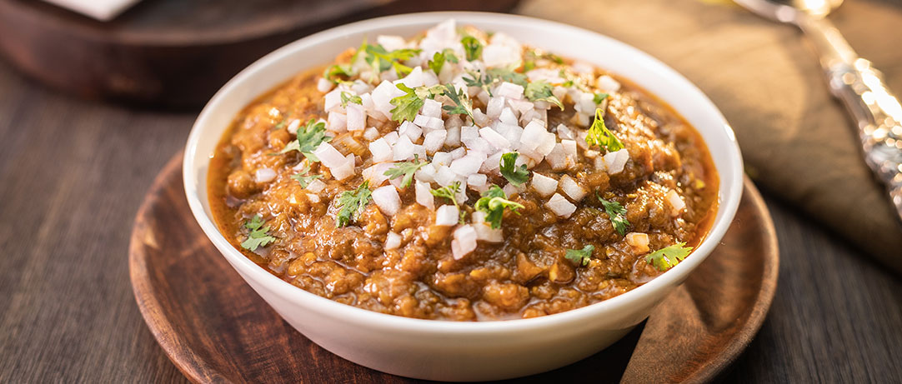
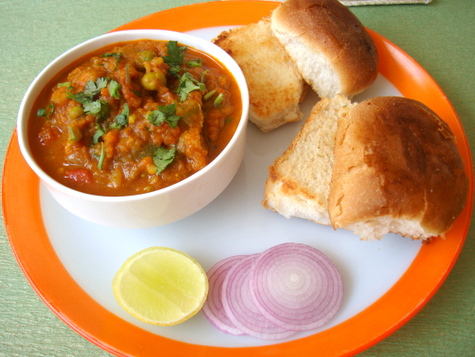

My favourite dish
Pav Bhaji
Pav bhaji is a fast food dish from India. It consists of a thick vegetable curry served with a soft bread roll.
Its origins are in the state of Maharashtra.



Ingredient List
- Mixed Vegetables
- Oil
- Onion
- Ginger-Garlic Paste
- Tomatoes
- Peas
- Water
- Green Chilies
- Turmeric
- Red Chilli Powder
- Coriander Powder
- Cumin Powder
- Amchur Powder
- Garam Masala Powder
- Lime Juice
- Coriander Leaves
- Salt
The Easy Steps
- Boil the vegetables in pressure cooker with 1 cup of water for one whistle.Keep aside.♨♨🍅
- Heat oil in a pan,add chopped onions and fry till they turn golden brown.Add Ginger-Garlic paste and fry for 5 minutes. 🍳
- Add Tomatoes,green chilies,turmeric powder,chili powder,coriander powder,cumin powder,garam masala powder and fry for a minute till all the masalas are well combined 🌶🍅🥕🥦
- Add the vegetables with the water,salt and mix well.Mash the vegetables well with a spoon.🥄🥛
- Add the amchur powder and mic well.Add the rest of the water to get a thick gravy.🍲
- Remove from fire,add lime juice and mix.Garnish with the coriander leaves.🍋🌿
- Serve hot with pav.🍞